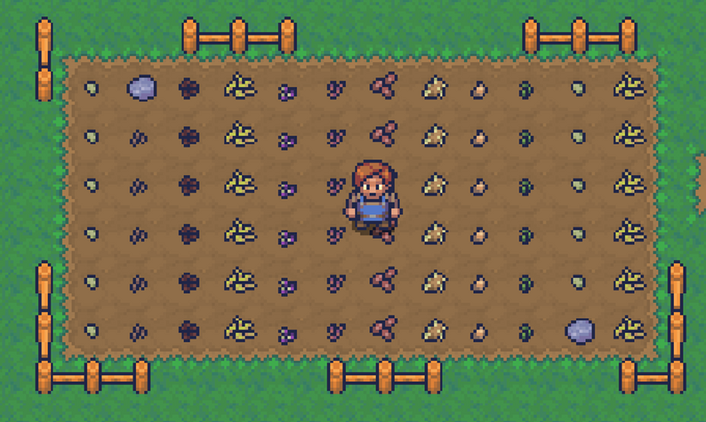
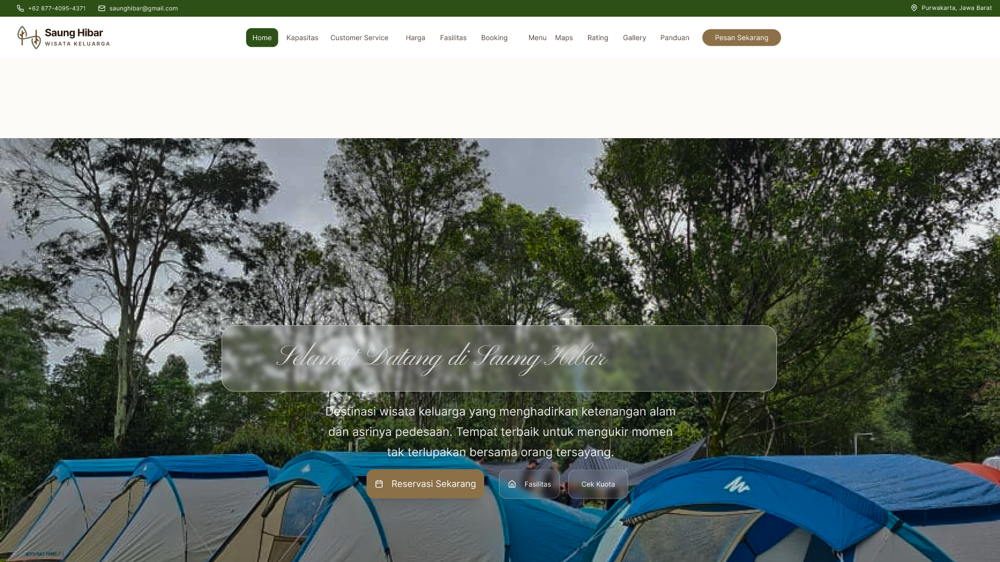
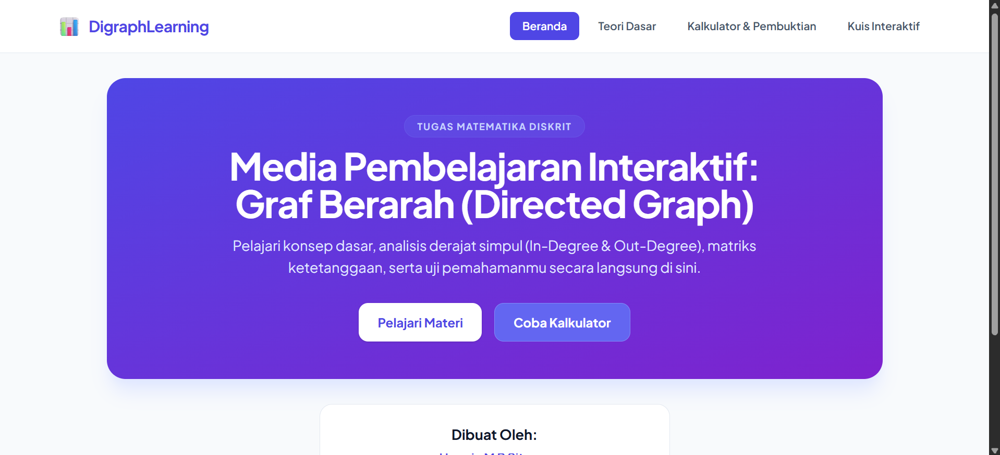
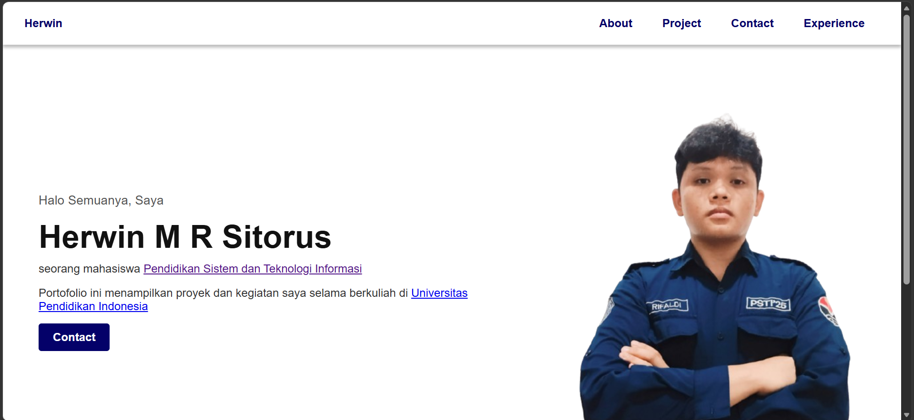

Berikut adalah beberapa project sederhana yang pernah dan sedang saya kerjakan pada perkuliahan.

Game edukasi bertema adventure.

Website bisnis wisata purwakarta (Saung Hibar)

Website kalkulaator graf berarah.

Website portofolio pribadi.